NASA Space Apps Challenge 2026 · Abandoned but not Forgotten
Ghosts of
Exploration
They stopped talking.
Their stories didn't.
A story-driven website that introduces kids aged 8–14 to the machines NASA left on the Moon, Mars and across the solar system.
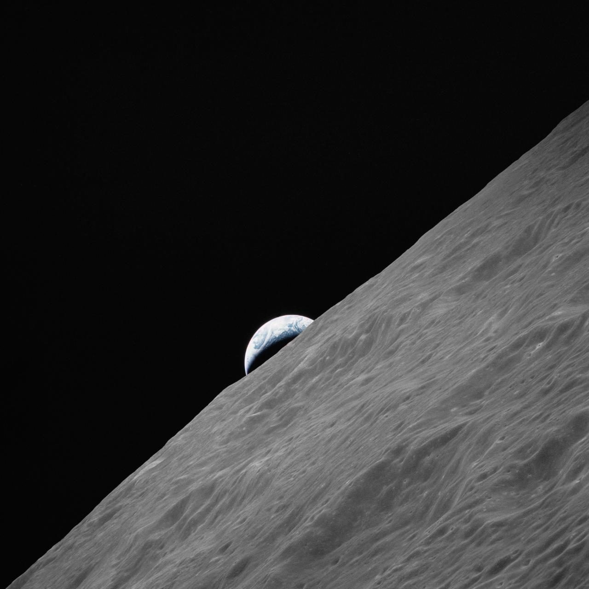
1 / 7
The problem
Kids only hear about the missions that are still running
- More than 180 tonnes of human-made hardware rests on the Moon, and about 7 tonnes on Mars (estimates vary).
- Rovers, landers and probes that changed what we know about the solar system went silent decades ago.
- Their stories are locked inside dense technical pages written for adults.
- Kids miss how today's missions grew from these “ghosts”.
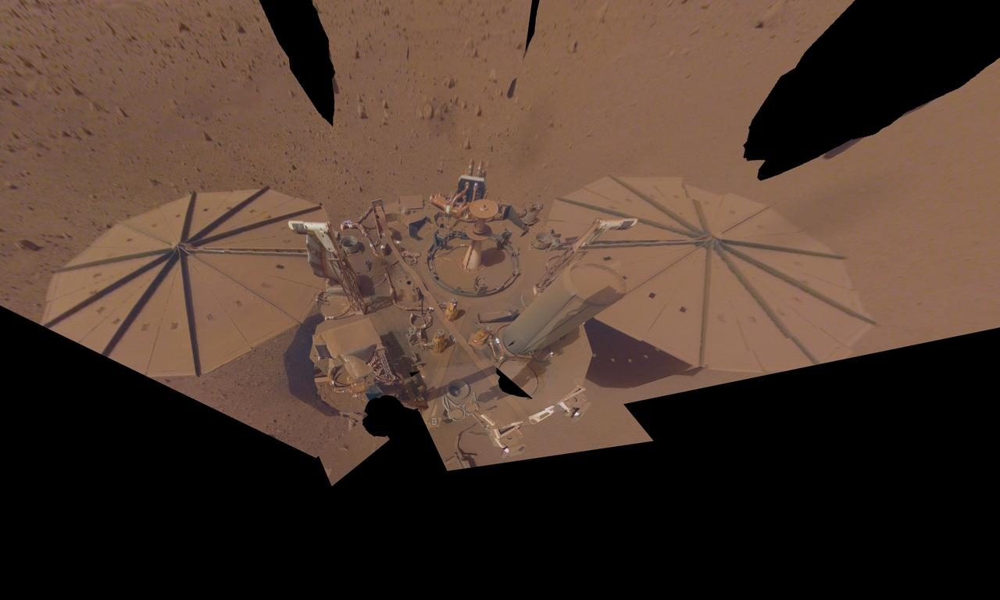
InSight's final selfie, 2022: its solar panels covered in Martian dust (NASA · PIA25287).
2 / 7
Our solution
Every machine tells its own story
49 machines from Vanguard 1 (1958) to Ingenuity (2024). Each one speaks in a first-person ghost log built from real mission facts:
- where it is now (real coordinates)
- what was planned vs. what really happened
- what it discovered, and why it matters today
- NASA photos, videos, 3D models and sounds
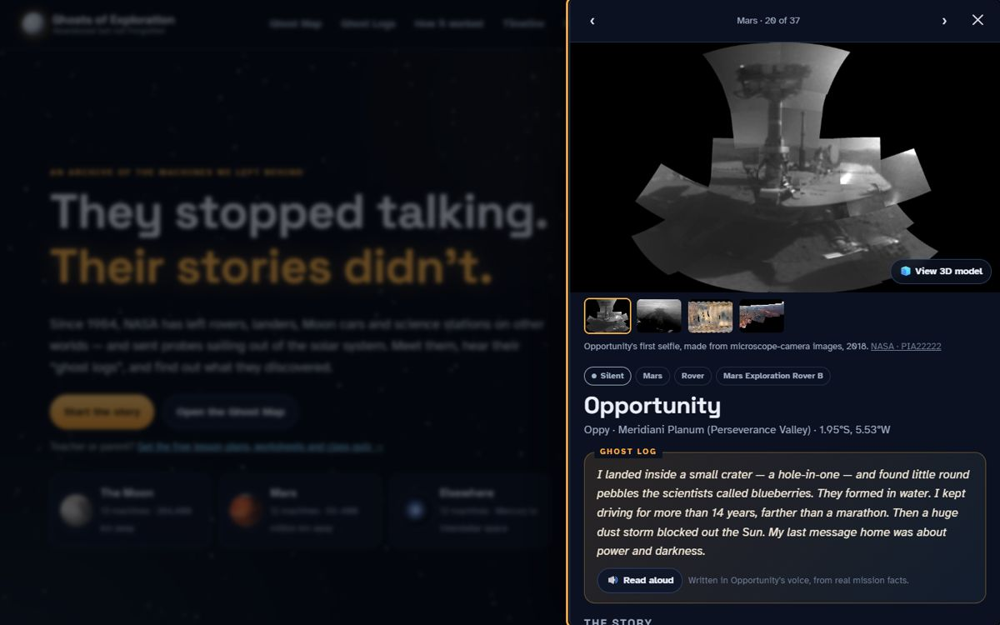
3 / 7
Showing how, not just telling
See it, hear it, try it
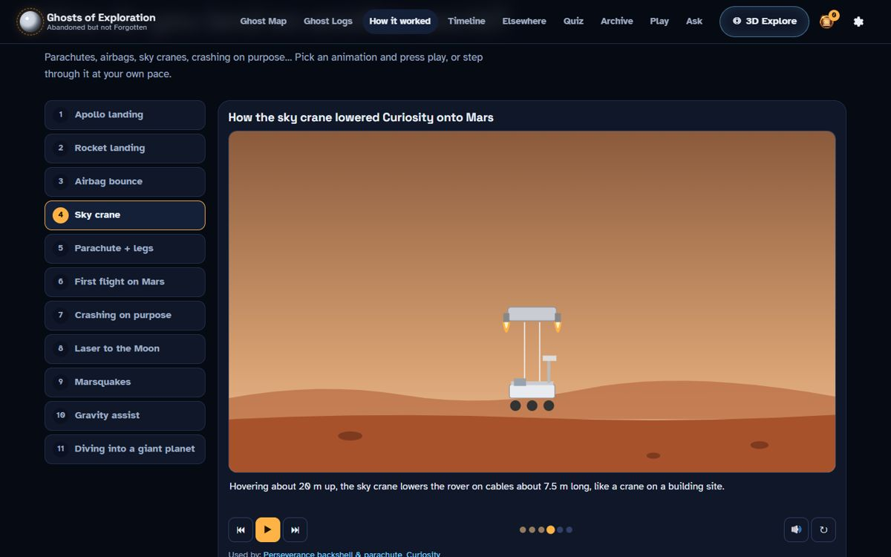
11 “How it worked” animationsAirbags, sky cranes, rocket landings, impactors, laser ranging, marsquakes, gravity assists.
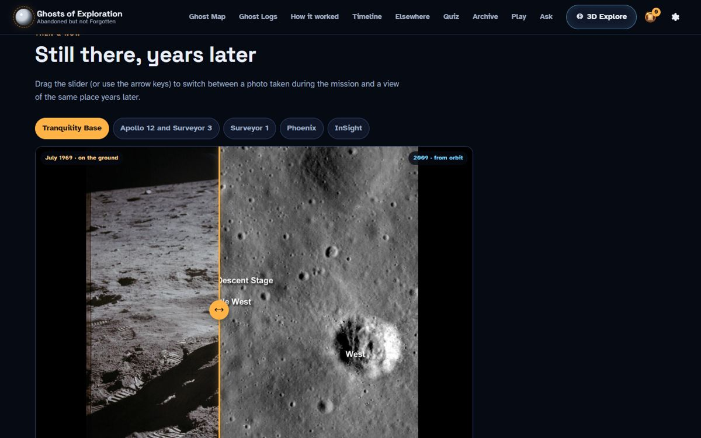
Then & nowDrag between Apollo 11 in 1969 and the same site seen from orbit in 2009.
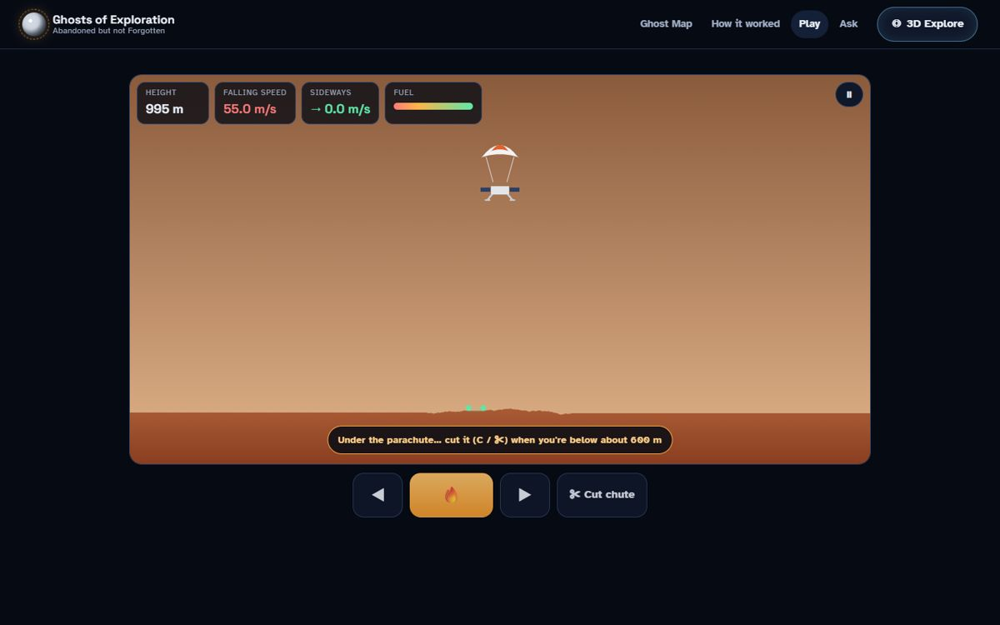
Land it yourselfA landing game with real Moon and Mars gravity. Every crash explains what real missions did.
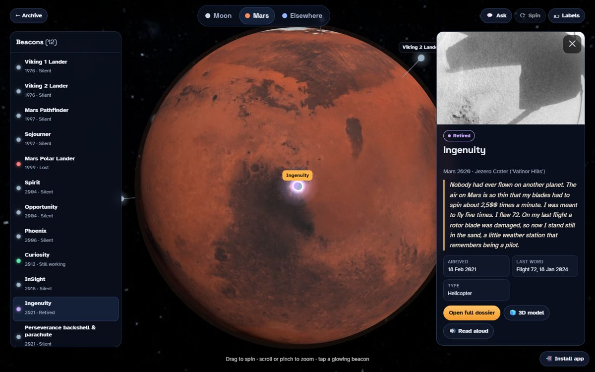
3D ExploreSpin the Moon, Mars and the solar system; tap glowing beacons.
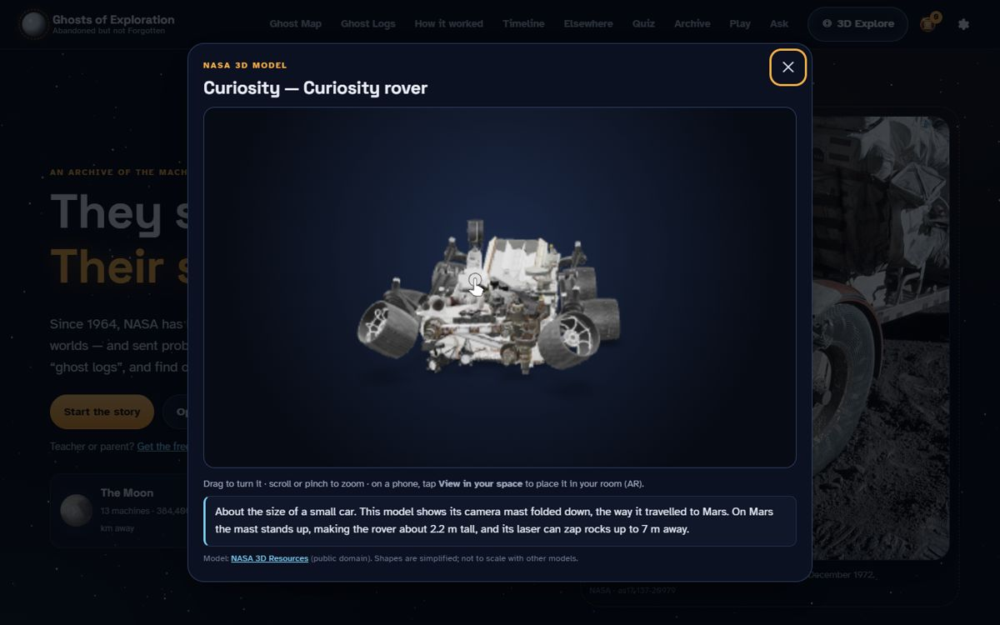
NASA 3D models22 machines, viewable in AR on phones.
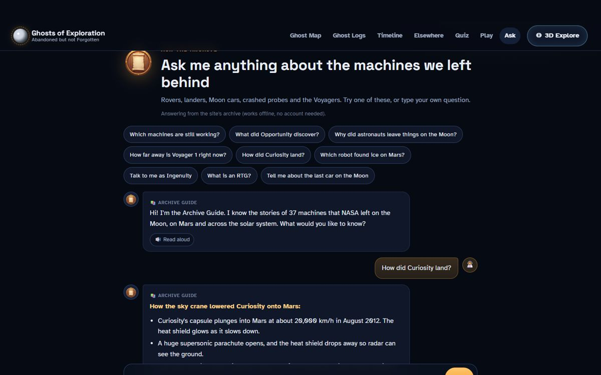
Ask the ArchiveQuestions answered from the archive, even offline.
4 / 7
For every learner and every classroom
Designed for ages 8–14
- Two reading levels: Explorer (8–11) and Scientist (12+)
- Read-aloud for every story and animation
- Four text sizes, dyslexia-friendly spacing, reduce-motion support, full keyboard support
- Works on phones and tablets, and offline once loaded. It can be installed as an app.
- Teacher pack: 3 lesson plans linked to NGSS standards, 4 printable worksheets, an answer key and a projector quiz
- Free, no sign-up, no tracking
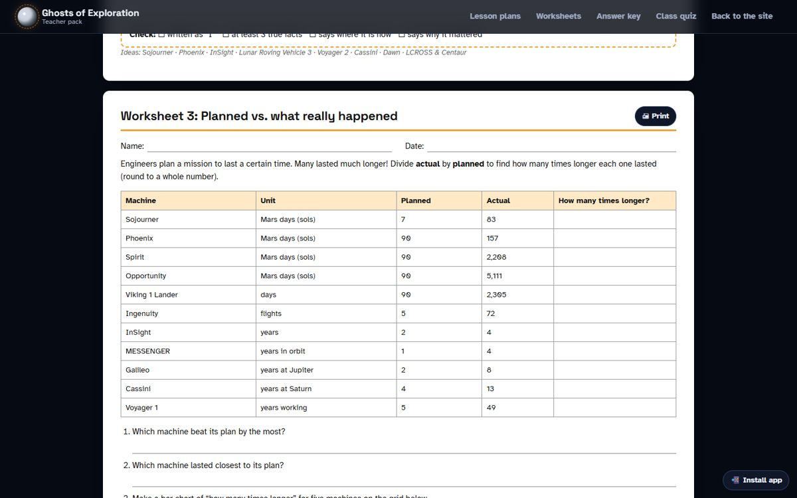
5 / 7
Accuracy first
Built on real NASA data
- NASA Image & Video Library: 68 photos and 10 videos, each labelled with its NASA ID
- NASA 3D Resources: 16 official models (we converted Curiosity from Blender)
- NASA SVS CGI Moon Kit (LRO data) for the Moon map and globe
- Facts from NASA mission records, with myths corrected: “My battery is low and it's getting dark” was a journalist's summary, not a real message
- Real sounds: Mars wind, Ingenuity's blades, marsquakes, astronauts driving on the Moon
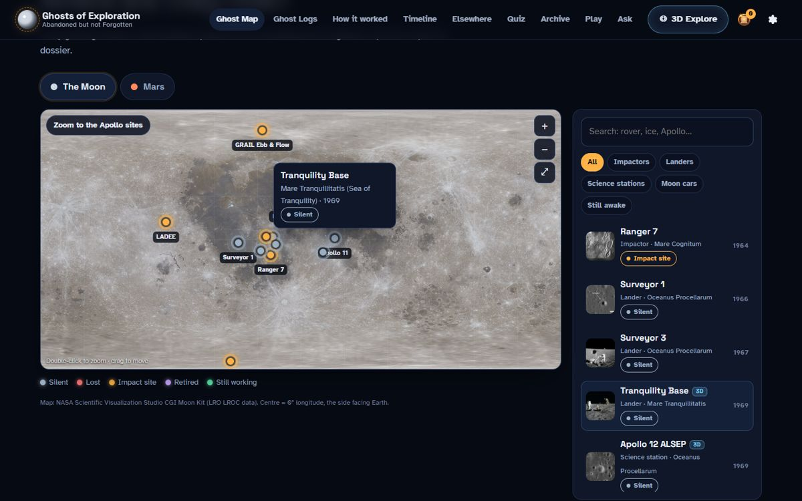
6 / 7
Impact & next steps
Give the ghosts a voice
Kids leave knowing that today's missions stand on the shoulders of Surveyor, Viking, Spirit, Opportunity and dozens more, and that some machines were crashed on purpose to protect worlds that might hold life.
Next: more languages · more NASA 3D models (Lunar Roving Vehicle, Sojourner) · Artemis-era updates · a classroom challenge mode
49machines across the solar system
11explainer animations
22NASA 3D models to spin
3lesson plans + worksheets
chetan-kumar-g.github.io/PROJECT-AREA-51
7 / 7